Telecom device archive · August additions
Author-side contact sheet · 14 screens · files continue the core sequence at device_capture_037
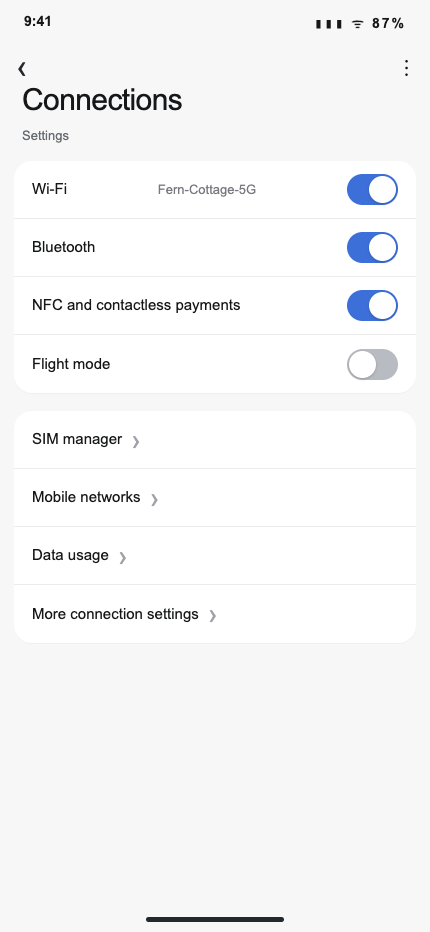
samsung_connections_overview_wifi_onrestore_mobile_data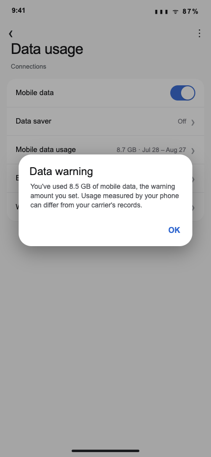
samsung_data_warning_dialogrestore_mobile_data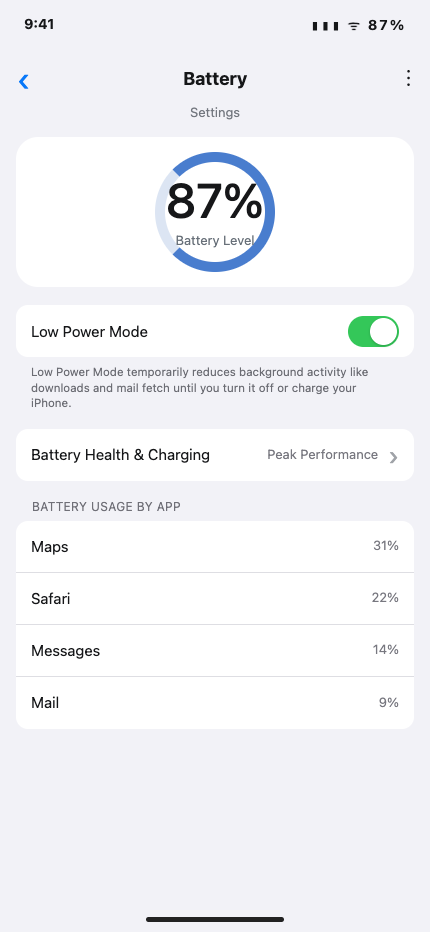
iphone_battery_low_power_mode_onrestore_mobile_data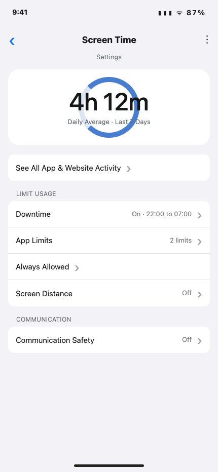
iphone_screen_time_daily_averagerestore_mobile_data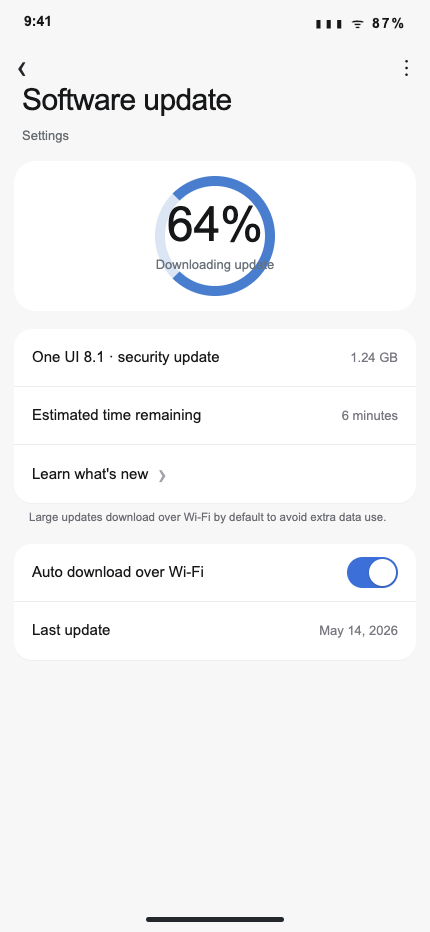
samsung_software_update_downloadingrestore_mobile_data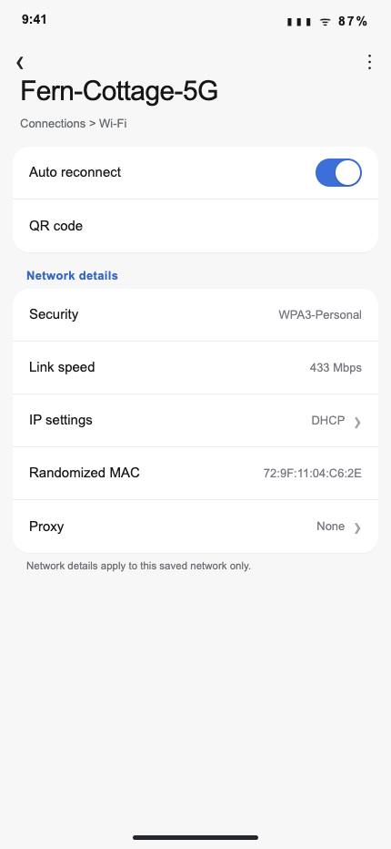
samsung_wifi_details_home_networkrestore_mobile_data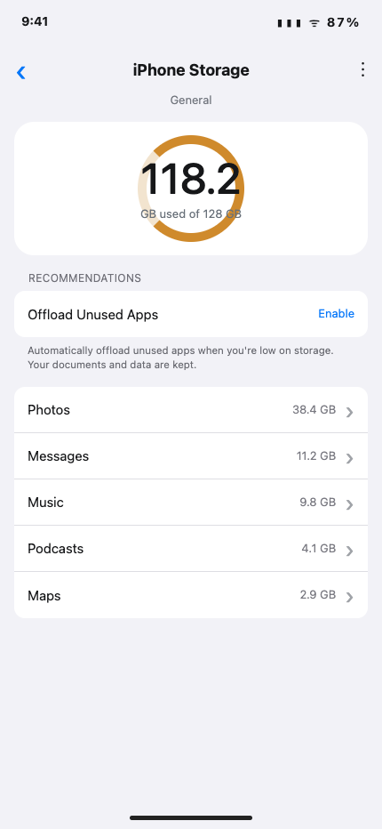
iphone_storage_nearly_fullrestore_mobile_data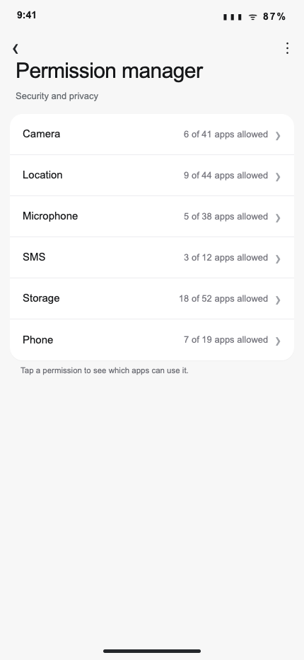
samsung_permission_manager_overviewrestore_mms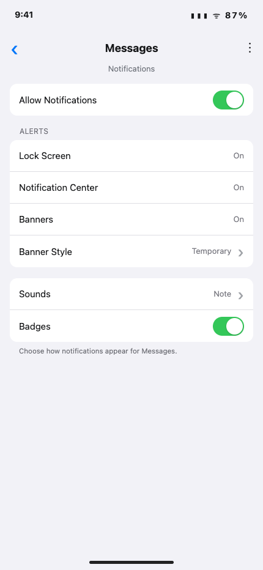
iphone_notifications_messages_onrestore_mms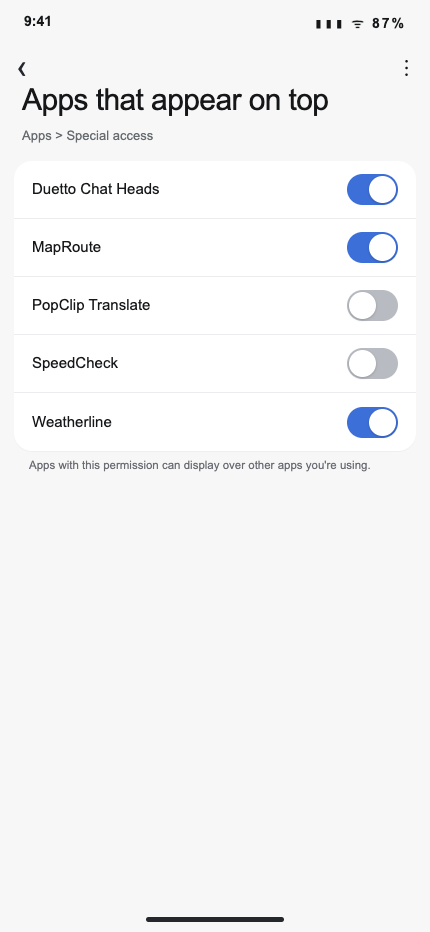
samsung_apps_appear_on_toprestore_mms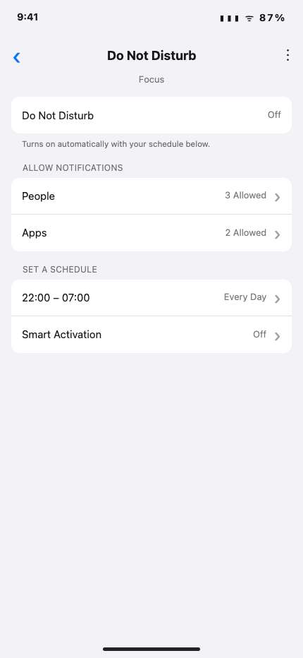
iphone_focus_do_not_disturb_scheduledrestore_mms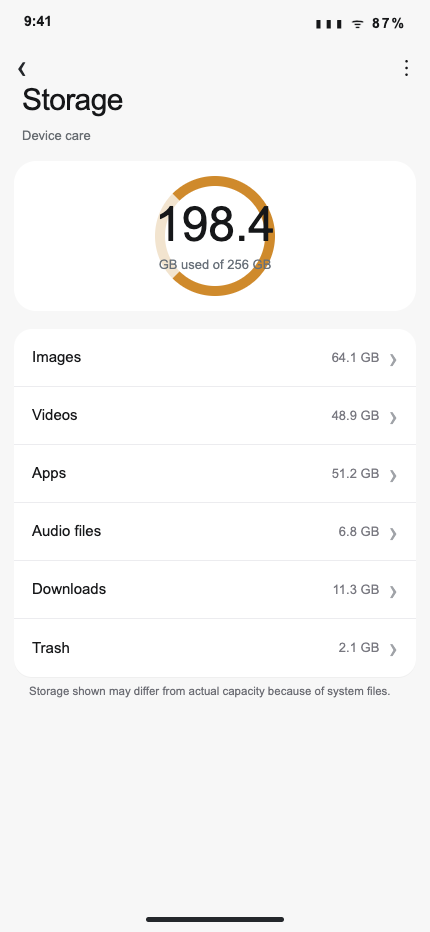
samsung_storage_overviewrestore_mms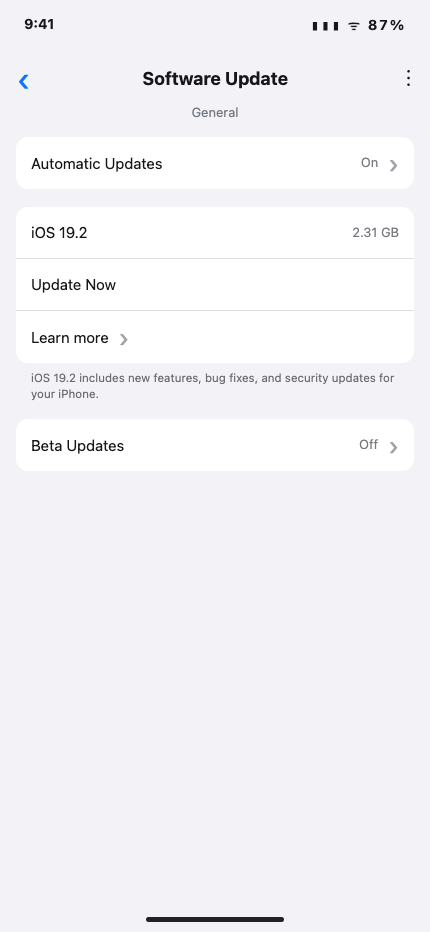
iphone_software_update_availablerestore_mms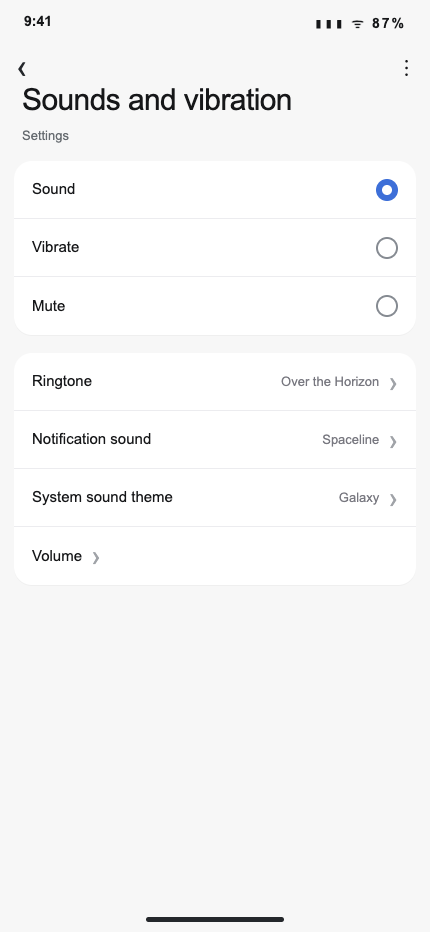
samsung_sound_mode_soundrestore_mms